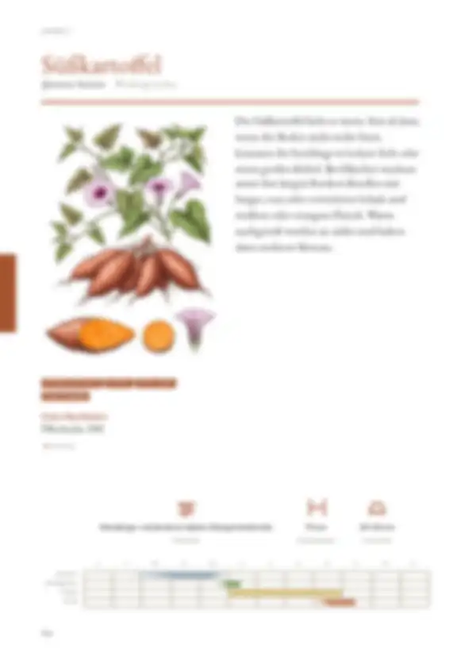
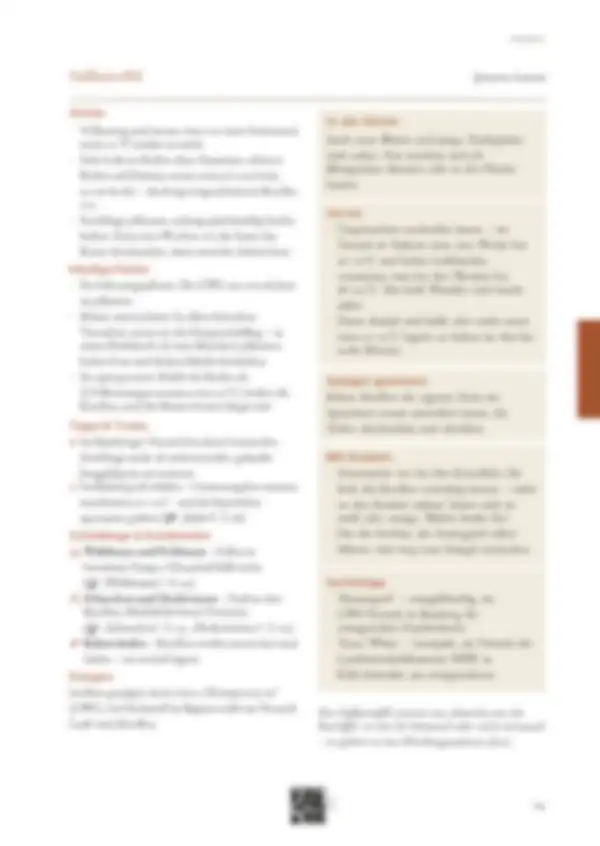

Tippe eine Quelle an, um zu sehen, wo sie verwendet wird – oder tippe auf einen Bereich der Seite.
16 Quellen dieser Doppelseite
Original · abgerufen am 26.10.2026 · ◐ ErfahrungVerwendet in: Zusammenfassung (Seite allgemein), Schädlinge & Krankheiten, Schädlinge & Krankheiten, Punkt 1, Geschichte
Original · abgerufen am 26.10.2026 · ◐ ErfahrungVerwendet in: Zusammenfassung (Seite allgemein), Nachbarn, Piktogramm-Leiste, Monatsleiste, Anbau, Anbau, Punkt 1, Anbau, Punkt 2, Häufige Fehler, Häufige Fehler, Punkt 1, Häufige Fehler, Punkt 3, Tipps & Tricks, Mit Kindern, Tipps & Tricks, Punkt 2, Düngen, Düngen, Punkt 1, Geschichte
Original · abgerufen am 26.10.2026 · ● belegtVerwendet in: Zusammenfassung (Seite allgemein), Piktogramm-Leiste, Monatsleiste, Häufige Fehler, Häufige Fehler, Punkt 2, Schädlinge & Krankheiten, Sortentipp, Schädlinge & Krankheiten, Punkt 2, Geschichte
Original · abgerufen am 26.10.2026 · ● belegtVerwendet in: Zusammenfassung (Seite allgemein), Monatsleiste, Anbau, Anbau, Punkt 2, Häufige Fehler, Häufige Fehler, Punkt 2, Saatgut gewinnen, Häufige Fehler, Punkt 3, Tipps & Tricks, Tipps & Tricks, Punkt 1, Schädlinge & Krankheiten, Sortentipp, Schädlinge & Krankheiten, Punkt 2, Geschichte
Original · abgerufen am 26.10.2026 · ● belegtVerwendet in: Zusammenfassung (Seite allgemein), Piktogramm-Leiste, Monatsleiste, Anbau, Anbau, Punkt 2, Vorrat, Schädlinge & Krankheiten, Schädlinge & Krankheiten, Punkt 2, Geschichte
Original · abgerufen am 26.10.2026 · ● belegtVerwendet in: Zusammenfassung (Seite allgemein), Monatsleiste, Anbau, Vorrat, Anbau, Punkt 3, Häufige Fehler, Häufige Fehler, Punkt 2, Geschichte
Original · abgerufen am 26.10.2026 · ● belegtVerwendet in: Zusammenfassung (Seite allgemein), Monatsleiste, Anbau, Anbau, Punkt 2, Schädlinge & Krankheiten, Schädlinge & Krankheiten, Punkt 2, Geschichte
Original · abgerufen am 26.10.2026 · ● belegtVerwendet in: Zusammenfassung (Seite allgemein), Düngen, Düngen, Punkt 1, Geschichte
Original · abgerufen am 26.10.2026 · ◐ ErfahrungVerwendet in: Zusammenfassung (Seite allgemein), Vorrat, Häufige Fehler, Häufige Fehler, Punkt 3, Mit Kindern, Schädlinge & Krankheiten, Schädlinge & Krankheiten, Punkt 3, Geschichte
Original · abgerufen am 26.10.2026 · ◐ ErfahrungVerwendet in: Zusammenfassung (Seite allgemein), Vorrat, Schädlinge & Krankheiten, Schädlinge & Krankheiten, Punkt 3, Geschichte
Original · abgerufen am 26.10.2026 · ◐ ErfahrungVerwendet in: Zusammenfassung (Seite allgemein), Monatsleiste, Anbau, Vorrat, Anbau, Punkt 3, Saatgut gewinnen, Mit Kindern, Schädlinge & Krankheiten, Schädlinge & Krankheiten, Punkt 3, Geschichte
Original · abgerufen am 27.10.2026 · ● belegtVerwendet in: Zusammenfassung (Seite allgemein), In der Küche, Geschichte
Original · abgerufen am 26.10.2026 · ◐ ErfahrungVerwendet in: Zusammenfassung (Seite allgemein), Monatsleiste, Anbau, Anbau, Punkt 1, Tipps & Tricks, Tipps & Tricks, Punkt 2, Geschichte
Original · abgerufen am 28.10.2026 · ◐ ErfahrungVerwendet in: Zusammenfassung (Seite allgemein), Häufige Fehler, Häufige Fehler, Punkt 2, Schädlinge & Krankheiten, Schädlinge & Krankheiten, Punkt 1, Geschichte
Original · abgerufen am 28.10.2026 · ◐ ErfahrungVerwendet in: Zusammenfassung (Seite allgemein), Sortentipp, Geschichte
Original · abgerufen am 28.10.2026 · ◐ ErfahrungVerwendet in: Piktogramm-Leiste
● belegt (Versuch, Fachinstitut) · ◐ Erfahrung (Beratung, Praxis) · ○ Überlieferung. Abschnitte ohne eigene Quellenangabe in den Daten zeigen die Quellen der ganzen Seite („Seite allgemein“).